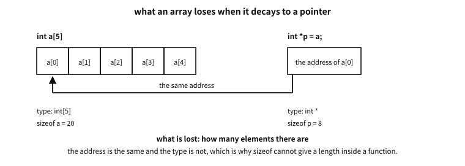
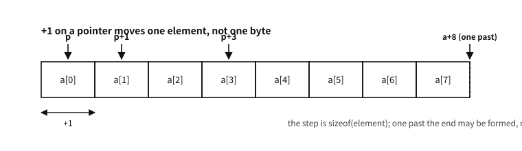

39 Arrays
What to know first
Looking back
Chapter 12 said a cache line carries “sixty-four neighbouring slots as one box”, and that this is why code scanning an array in order is fast. Then what exactly is an “array” through the eye of memory?
A. Slots of the same type lined up adjacent without gaps — that is all. int a[5] is five ints laid side by side at consecutive addresses, so knowing only the first slot’s address and the type lets every other position be calculated (element = start address + slot size). This property of “calculable neighbours” is the root of both the array’s power (immediate access, cache friendliness) and its danger (miscalculating the boundary).
The need for this chapter, and its context
char line[100] left on credit back in chapter 26 is paid off here. From this chapter on, it becomes clear why part 7 is called “memory”.By the end of this chapter
char line[100] credit is settled here.The questions this chapter answers
- Is “contiguous” only in virtual addresses, or in physical memory too?
- Why was it settled this way — would plain byte arithmetic not be simpler?
- Should every pointer parameter then be written
[static 1]? - Does the compiler not catch a boundary violation?
39.1 Declaration, access, traversal
examples-en/ch38/arr.c
#include <stdio.h>
int main(void)
{
int a[5] = {3, 1, 4, 1, 5};
int sum = 0;
for (int i = 0; i < 5; i += 1) {
sum += a[i];
}
printf("sum: %d\n", sum);
printf("a[2] = %d, *(a + 2) = %d\n", a[2], *(a + 2));
int *p = a; /* the array name decays to the address of the first element */
printf("sizeof a = %zu, sizeof p = %zu\n", sizeof a, sizeof p);
return 0;
}
Output
sum: 14
a[2] = 4, *(a + 2) = 4
sizeof a = 20, sizeof p = 8
int a[5] = {3, 1, 4, 1, 5}; — type, name, slot count, and brace initialisation. Access is a[i] and numbering starts at 0 (the first element is a[0], the last a[4]). Why count from 0 was already answered by the opening exchange — a[i] really means “the place slots away from the start”, so the first element is zero away.
39.2 Arrays and pointers — the truth about decay
The latter part of the demonstration is this chapter’s heart. Set out exactly the relationship that has caused the most confusion in C — arrays and pointers.
The rule: in most contexts an array’s name decays into “the address of its first element.” Put side by side what survives the decay and what is lost:

Figure 39.1 — The address is the same and the type is not — so how many elements there are disappears.
That is why int *p = a; is legal — a was read as the pointer value &a[0]. And the notation a[i] is itself sugar for *(a + i) — add an integer to a pointer and you get the address “ slots along, by that type’s size” (pointer arithmetic — chapter 38′s rules apply here), and dereferencing that is indexed access. The demonstration’s a[2] == *(a + 2) is the check.
A common misconception. “An array is a pointer”
sizeof a is 20 (the total size of five ints) and sizeof p is 8 (the size of one address, chapter 36). The representative context in which decay does not happen is exactly sizeof, which is why the difference is visible — and it is thanks to this that chapter 26′s fgets(line, sizeof line, stdin) measured the container correctly. One consequence matters: “pass” an array to a function and only the decayed address is copied (chapter 34), so the function side cannot learn the size with sizeof — which is why C functions conventionally take an array and its length as a separate argument. The concern of chapter 8′s representations that “keep the length beside the data” reappears here at C’s function boundary.39.3 There is no gap between one element and the next
Before pointer arithmetic, one fact has to be nailed down. We just read a[i] as “the place cells away from the start” — and that arithmetic only works if the cells sit flush against one another. They do, and not by custom: it is how the standard defines an array type in the first place.
“ An array type describes a contiguously allocated nonempty set of objects with a particular member object type, called the element type.1 ”
Three things follow from “contiguously allocated”.
| What follows | So |
|---|---|
| there is no padding between elements | &a[i+1] - &a[i] is always exactly 1, which in bytes is sizeof a[0] |
| the whole size is exactly a multiple of the element size | sizeof a == sizeof a[0] * count. Because that equation never wavers, this is how the count is taken: sizeof a / sizeof a[0] |
| an address is one multiplication away | a[i] sits at “start + i × element size”. That is why indexing is cheap on the machine, and why the cache brings in neighbouring elements together (chapter 12) |
Table 39.1 — What follows from elements being flush against each other
Here is where structs differ. A struct may have gaps between members (chapter 48), while an array has no gap between elements. So what happens to an array of structs? Since no gap is allowed between elements, the struct’s own size is rounded up with padding at the tail so that it is a multiple of its alignment. That story comes with a figure in chapter 48, once structs have been met.
Q. Is “contiguous” only in virtual addresses, or in physical memory too?
A. In the address space the program sees. That is all the standard says, and practically it is enough — those are the addresses we use.
Physically it can differ. A large array spans several pages, and pages may sit far apart in physical memory (chapter 12′s virtual memory). The program still sees one line, so the index arithmetic stays correct. Performance is another matter: crossing a page boundary costs another address translation, which was the TLB (translation lookaside buffer) story.
39.4 Adding to a pointer is not ordinary addition
We have just said that a[i] is *(a + i). Then what value, exactly, is a + 2? If it were “2 added to an address” it would be two bytes along; in fact it is two int slots along, that is eight bytes. Pointer arithmetic moves by multiplying by the size of the type pointed at.

Figure 39.2 — The distance +1 jumps is the size of the type pointed at.
Set down exactly, the rule is this.
| expression | meaning | result type |
|---|---|---|
p + n, n + p | forward by n times the size of what p points at | the same pointer type as p |
p - n | backward by the same | the same |
p - q | how many elements fit between the two addresses | ptrdiff_t (a signed integer) |
p++, ++p, p += n | moved by the same rule, then assigned | the same |
Table 39.2 — The four shapes of pointer arithmetic
★ And that table is all there is. There are exactly four shapes in which a pointer may take part in addition or subtraction; everything else is a syntax error. The standard nails it down as a constraint.
“ For addition, either both operands shall have arithmetic type, or one operand shall be a pointer to a complete object type and the other shall have integer type. …
For subtraction, one of the following shall hold: both operands have arithmetic type; both operands are pointers to qualified or unqualified versions of compatible complete object types; or the left operand is a pointer to a complete object type and the right operand has integer type. (§6.5.7) ”
| Shape | Result | Allowed? |
|---|---|---|
pointer + integer | pointer | yes |
integer + pointer | pointer | yes — addition does not care which side |
pointer - integer | pointer | yes |
pointer - pointer | ptrdiff_t | yes — only within one array |
integer - pointer | — | ★ no — in subtraction the pointer must be on the left |
pointer + pointer | — | no — no combination allows it |
pointer *, /, % | — | no |
Table 39.3 — Which arithmetic a pointer may join, and which not
★ Note the asymmetry between addition and subtraction. 5 + p is fine but 5 - p is not, because addition asks only that “one operand is a pointer” while subtraction says “the left operand is a pointer”. Think about the meaning and it follows: “five slots along from this address” makes sense; “five minus an address” does not.
This book asked the compiler and confirmed it. Each of the four forbidden shapes is refused like this.
| What was written | What GCC said |
|---|---|
5 - p | invalid operands to binary - (have 'int' and 'int *') |
p + q | invalid operands to binary + (have 'int *' and 'int *') |
v + 1 (a void *) | pointer of type 'void *' used in arithmetic |
f + 1 (a function pointer) | pointer to a function used in arithmetic |
Table 39.4 — What GCC says to the forbidden shapes
The last two follow from the clause’s phrase “a pointer to a complete object type”. void is not a complete type (chapter 27), and a function type is not an object type. Neither qualifies for arithmetic — gcc and clang allow byte-sized arithmetic on them as an extension, but -pedantic-errors turns it into an error.
So adding an integer to a pointer is not “adding a number to a number that is an address” but counting in slots. Only on a char * is 1 one byte; on an int * it is four, on a struct point * it is one whole struct.
Q. Why was it settled this way — would plain byte arithmetic not be simpler?
A. Three reasons overlap.
First, it gives arrays away for free. a[i] can be defined as *(a + i) only because the addition counts elements. Had it counted bytes, every array access would have had to read *(a + i * sizeof *a), and changing an element type would have meant editing every access. That one rule is how C has arrays without any special machinery for them.
Second, the type already knows the size. Recall chapter 3′s refrain — memory has no boundaries, and how many bytes count as one lump is decided by the reading side. A pointer’s type is exactly that decision. Letting the value that already carries the decision carry the movement too is natural.
Third, the machine moves that way. Most CPUs have an addressing mode that computes “base + index × size” in one step. Element-wise arithmetic maps straight onto it — another instance of chapter 2′s “C did not hide the machine”.
examples-en/ch38/ptrmath.c
/* Pointer arithmetic moves in "slots", not in bytes. */
#include <stddef.h>
#include <stdio.h>
struct point { int x, y; };
int main(void)
{
char c[4];
int a[8] = {0, 10, 20, 30, 40, 50, 60, 70};
double d[4];
struct point s[4];
/* ── (1) the same +1, a different distance moved ─────────────── */
printf("type sizeof (p+1) - p in bytes\n");
printf("char %2zu %td\n",
sizeof c[0], (char *)(c + 1) - (char *)c);
printf("int %2zu %td\n",
sizeof a[0], (char *)(a + 1) - (char *)a);
printf("double %2zu %td\n",
sizeof d[0], (char *)(d + 1) - (char *)d);
printf("struct point %2zu %td\n",
sizeof s[0], (char *)(s + 1) - (char *)s);
/* to move by bytes, cast to a character pointer */
int *p = a;
printf("\np + 1 points at %d\n", *(p + 1));
printf("(char*)p + 1 is the second byte of a[0]\n");
/* ── (2) pointer subtraction gives a count of elements ────────── */
ptrdiff_t gap = &a[4] - &a[1];
printf("\n&a[4] - &a[1] = %td (elements, not bytes)\n", gap);
printf("counted in bytes = %td\n",
(char *)&a[4] - (char *)&a[1]);
/* ── (3) the subscript is sugar over the arithmetic ───────────── */
printf("\na[3] = %d, *(a + 3) = %d, *(3 + a) = %d, 3[a] = %d\n",
a[3], *(a + 3), *(3 + a), 3[a]);
/* ── (4) one past the end may be formed, but never followed ───── */
int *end = a + 8; /* one-past-the-end — legal */
printf("\nelements up to the one-past-the-end address: %td (never dereferenced)\n", end - a);
int count = 0;
for (int *q = a; q != end; q++) /* the standard idiom: stop at != end */
count += (*q != 0);
printf("non-zero elements: %d\n", count);
return 0;
}
Output
type sizeof (p+1) - p in bytes
char 1 1
int 4 4
double 8 8
struct point 8 8
p + 1 points at 10
(char*)p + 1 is the second byte of a[0]
&a[4] - &a[1] = 3 (elements, not bytes)
counted in bytes = 12
a[3] = 30, *(a + 3) = 30, *(3 + a) = 30, 3[a] = 30
elements up to the one-past-the-end address: 8 (never dereferenced)
non-zero elements: 7
The first block of output shows the whole rule. The same + 1 moves a different distance for each type, and the distance is exactly sizeof. So (char *)p + 1 and p + 1 point at different places — which is where the idiom of casting to a character pointer to move by bytes comes from (chapter 93′s views do this).
The second block is subtraction. &a[4] - &a[1] is 3, not 12 — pointer subtraction gives a count of elements, not of bytes. And that is why the result has type ptrdiff_t: subtracting a later pointer from an earlier one can be negative, so the type must be signed.
39.4.1 Three integer types that hold an address — ptrdiff_t, intptr_t, uintptr_t
Three integer types keep company with pointers. The names are close enough to mix up, but the three answer different questions.
| Type | The question it answers | Where | Always there? |
|---|---|---|---|
ptrdiff_t | how many elements apart are two pointers | <stddef.h> | always |
intptr_t | can this address be held in a signed integer and taken back | <stdint.h> | optional |
uintptr_t | can this address be held in an unsigned integer and taken back | <stdint.h> | optional |
Table 39.5 — The three types that hold an address as an integer
★ The rule for telling them apart is simple.
ptrdiff_t is the result type of a subtraction. q - p has that type, and it is signed for the reason already seen: subtracting a later position from an earlier one gives a negative. Do not confuse it with size_t — “how many” is size_t, “how far apart” is ptrdiff_t (chapter 36). Even the conversions differ: %zu and %td.
intptr_t and uintptr_t have nothing to do with subtraction. All they promise is a round trip — “a valid void * put into this type and taken back compares equal to the original”. Nothing more. Doing arithmetic on the converted value and converting back is outside that promise, and chapter 38′s provenance applies.
A common misconception. “To subtract addresses, just convert to uintptr_t and subtract”
It compiles. But it is a different calculation.
ptrdiff_t d1 = q - p; /* in elements, inside the contract */
uintptr_t d2 = (uintptr_t)q - (uintptr_t)p; /* in bytes, on the edge of it */The values differ to begin with — in an int array, where d1 is 4, d2 is 16. Worse, the moment you convert to uintptr_t the grounds for checking that they are in the same array disappear. Subtracting addresses of different objects with - is outside the contract and can be caught; converted to integers and subtracted, a number quietly comes out. You have switched off the compiler’s watch yourself.
★ There are legitimate places to convert to an integer — printing (chapter 36′s PRIxPTR), checking alignment (u % alignof(T) == 0), hiding a tag in the low bits (chapter 4′s tagged pointer). All of them assume returning to that address, and none of them is measuring a distance.
39.4.2 How far it may go — the contract of the arithmetic
Chapter 38′s provenance applies to pointer arithmetic as it stands. Reduced to practical sentences:
| what is done | verdict |
|---|---|
| moving a pointer within the array it points into | fine |
| forming a pointer to the position one past the last element | fine — but dereferencing it is forbidden |
| forming an address further out than that | outside the contract — even if it is only computed and never followed |
+ 1 on a single object that is not an array | fine — it is treated as an array of length one |
| subtracting pointers into different arrays | outside the contract |
ordering pointers into different arrays with < | outside the contract (equality with == is allowed) |
adding an integer to a void * | not in the standard — a gcc/clang extension (one byte per unit) |
Table 39.6 — How far pointer arithmetic is allowed
“Outside the contract even when only formed” sounds strange, but it changes how loop conditions are written. p <= a + n is safe because it goes no further than one past the end; p < a + n + 1 computes an address one further out and is outside the contract. Sweeping backwards as for (p = a + n - 1; p >= a - 1; p--) is dangerous for the same reason — a - 1 is an address before the array, and it is outside the contract the moment it is computed.
Counter-example. a backward loop that steps in front of the array
for (int *p = a + n - 1; p >= a - 1; p--) /* forms a - 1 — outside the contract */
...The safe shapes use an index, or keep the end condition inside the array.
for (size_t i = n; i-- > 0; ) /* stops when i is 0 — no address is formed */
use(a[i]);In practice. optimisers really use this rule
p is guaranteed to point within the array a, then p >= a is always true and the test may be deleted — exactly the logic of optimisation from chapter 14. Bounds checks written this way have disappeared from release builds more than once, in bugs reported in earnest.39.5 An array parameter is not an array
There is one more rule in the position of a function parameter. Declare it as an array and the compiler turns it into a pointer. So the following three are completely identical declarations to the compiler.
void f(int *a);
void f(int a[]);
void f(int a[10]); /* the 10 is documentation only; it is not checked */For a multi-dimensional array only the outermost (leftmost) dimension is stripped. The inner dimensions remain part of the type.
void g(int m[3][4]); /* the real type is int (*m)[4] */
void h(int c[2][3][4]);/* the real type is int (*c)[3][4] */There are three places where this fact becomes visible.
examples-en/ch38/param.c
#include <stdio.h>
/* The three declarations are exactly the same thing to the compiler: all int *.
(Applying sizeof directly to a parameter name makes gcc warn, so we take it
into a local variable of the same type once and measure that.) */
static void by_ptr(int *a) { int *p = a; printf(" int *a : sizeof = %zu\n", sizeof p); }
static void by_arr(int a[]) { int *p = a; printf(" int a[] : sizeof = %zu\n", sizeof p); }
static void by_size(int a[10]) { int *p = a; printf(" int a[10] : sizeof = %zu\n", sizeof p); }
/* A parameter is just a pointer variable, so another address can be assigned to it */
static int second_of(int a[10])
{
a = a + 1; /* impossible for an array — an array name cannot be assigned to */
return a[0];
}
/* Two dimensions: only the outermost (leftmost) dimension is stripped.
int m[3][4] -> int (*m)[4] */
static void by_2d(int m[3][4])
{
int (*p)[4] = m; /* this is the parameter's real type */
printf(" int m[3][4] : sizeof = %zu (a pointer), sizeof p[0] = %zu (one row)\n",
sizeof p, sizeof p[0]);
printf(" m[1][2] = %d\n", m[1][2]);
}
int main(void)
{
int arr[10] = {0,1,2,3,4,5,6,7,8,9};
int grid[3][4] = { {0,1,2,3}, {4,5,6,7}, {8,9,10,11} };
printf("on the caller's side (real arrays):\n");
printf(" int arr[10] : sizeof = %zu\n", sizeof arr);
printf(" int grid[3][4] : sizeof = %zu, sizeof grid[0] = %zu\n",
sizeof grid, sizeof grid[0]);
printf("inside the functions (all pointers):\n");
by_ptr(arr);
by_arr(arr);
by_size(arr);
by_2d(grid);
printf("assigning to a parameter: second_of(arr) = %d\n", second_of(arr));
printf("the original is untouched: arr[0] = %d\n", arr[0]);
return 0;
}
Output
on the caller's side (real arrays):
int arr[10] : sizeof = 40
int grid[3][4] : sizeof = 48, sizeof grid[0] = 16
inside the functions (all pointers):
int *a : sizeof = 8
int a[] : sizeof = 8
int a[10] : sizeof = 8
int m[3][4] : sizeof = 8 (a pointer), sizeof p[0] = 16 (one row)
m[1][2] = 6
assigning to a parameter: second_of(arr) = 1
the original is untouched: arr[0] = 0
① The value of sizeof differs. On the caller’s side arr is a real array, so 40 bytes (ten ints), but inside the function it is 8 — the size of one pointer. So the idiom sizeof a / sizeof a[0] for counting elements does not work inside a function. The count must be received separately.
gcc really does point at this mistake. Here is the diagnostic received when the example was first written.
error: ‘sizeof’ on array function parameter ‘a’ will return size of ‘int *’
[-Werror=sizeof-array-argument]
note: declared here② It can be assigned to. An array’s name cannot appear on the left of an assignment, but a parameter is just a pointer variable, so a = a + 1 works. The example’s second_of does that — it moves the parameter along and reads a[0], yielding the original’s second element — and the caller’s arr was not affected at all (exactly chapter 34′s copy-by-value rule).
③ In two dimensions only half remains. sizeof p is 8 (a pointer) while sizeof p[0] is 16 — that is, the size of “one row” survives. It is because the inner dimension remains in the type, and that is what makes an access like m[1][2] compute correctly. Put the other way round, the size of the inner dimension must be written — int m[][] does not compile.
A common misconception. “I wrote int a[10] for the parameter, so passing fewer than 10 will be caught”
10 is closer to a comment with no meaning at all to the compiler — the type simply becomes int *. If you really want to make the array size a contract there are two roads. One is to take the size as a separate parameter (the commonest and surest method), the other is the [static 10] notation of the next section. The latter pins a minimum count down as a promise so that the compiler can warn.39.6 Arrays whose size is settled at run time — VLAs
Every array so far had its size settled at compile time. C99 added one more — the variable length array (VLA (variable-length array)). A variable, not a constant, may be written in the size slot.
examples-en/ch38/vla.c
#include <stdio.h>
/* [static N]: the promise "an array of at least N elements comes here".
It can be used only in an array declarator of a function parameter. */
static int sum3(const int a[static 3])
{
return a[0] + a[1] + a[2];
}
/* A variable length array (VLA) as a parameter: take the size first, use it after */
static int sum_n(size_t n, const int a[n])
{
int s = 0;
for (size_t i = 0; i < n; i++) s += a[i];
return s;
}
/* A two-dimensional VLA parameter — no computing indices by hand */
static int trace(size_t n, const int m[n][n])
{
int s = 0;
for (size_t i = 0; i < n; i++) s += m[i][i];
return s;
}
int main(void)
{
int fixed[3] = {1, 2, 3};
printf("sum3 = %d\n", sum3(fixed));
size_t n = 4;
int local[n]; /* a local VLA: its size is settled while running */
for (size_t i = 0; i < n; i++) local[i] = (int)(i * i);
printf("sizeof local = %zu bytes (= %zu ints)\n", sizeof local, sizeof local / sizeof local[0]);
printf("sum_n = %d\n", sum_n(n, local));
int grid[3][3] = { {1,2,3}, {4,5,6}, {7,8,9} };
printf("trace = %d\n", trace(3, grid));
return 0;
}
Output
sum3 = 6
sizeof local = 16 bytes (= 4 ints)
sum_n = 14
trace = 15
There are two uses. The first is the VLA as a local variable (int local[n];), where an array whose size is settled at run time is taken on the stack. That is also the only time sizeof is computed at run time — the example’s sizeof local returning 16 is the evidence. The second is the VLA as a parameter (const int a[n], const int m[n][n]), and this side is far more useful. Its value is greatest in two dimensions and above — you can write m[i][j] directly instead of computing m[i * n + j] by hand.
Local VLAs, however, have hardened into something not recommended in practice.
- Fail to control the size and the stack overflows. Use a number that came from input directly as a size and an attacker can bring down the stack, and there is no way to check for that collapse.
- There is no way to report failure.
mallocat least returns null (chapter 46); a VLA simply collapses when there is no room. - Its standing in the standard wavered too. Mandatory in C99, it became an optional feature in C11 (if
__STDC_NO_VLA__is defined, the implementation lacks it). MSVC does not support it. - The Linux kernel removed VLAs from its entire codebase in 20182 — predictability of stack usage and performance were the reasons.
So: the VLA notation in a parameter is usable; avoid local VLAs. If you need an array whose size is settled at run time, chapter 46′s dynamic allocation is the proper method.
39.7 [static N] in a parameter — “at least this many will arrive”
There is one more peculiar syntax used only in array parameters.
int sum3(const int a[static 3]); /* a points at three or more elements */Here static has nothing to do with storage duration (chapter 45). It means the contract “the pointer passed in this argument points at an array of at least N elements.” Two things are gained — the compiler may optimise on that premise (prefetching and the like), and it can point out with a warning code that passes null or a shorter array.
Two things to remember.
- The only place it may be written is an array declarator in a function parameter. It cannot go on a local variable or a struct member declaration. And for a multi-dimensional array it attaches only to the outermost dimension.
- Break the contract and you are outside it.
sum3(nullptr)or passing a two-element array is undefined behaviour — meaning it is a promise, not a check.
39.7.1 [static 1] — writing “not null” into the declaration
The form you meet most often has size 1.
void use(int a[static 1]); /* a points at one valid object */Saying “an array with at least one element” is the same as saying not a null pointer, and the object it points at is valid. Instead of a comment reading “do not pass null”, the promise sits in the declaration itself. That is why this spelling is used as the idiom for expressing non-nullness in a form a machine can read.
Tools really do read it. Here is what GCC 15 did while this book was being written.
static int sum1(int a[static 1]) { return a[0]; }
...
(void)sum1(NULL);warning: argument 1 null where non-null expected [-Wnonnull]
note: in a call to function ‘sum1’ declared ‘nonnull’“Declared nonnull” is the phrase that matters — the compiler translates [static 1] into a no-null property. With a size above 1 it looks at the length as well. Passing a two-element array to a const int a[static 3] parameter gets this:
warning: ‘sum3’ reading 12 bytes from a region of size 8 [-Wstringop-overread]Still, it is a promise, not a check. No run-time test is inserted, and the compiler can only complain where it can see the problem — a literal null, an array of known size. Once the pointer has flowed through a few functions it usually says nothing at all. A call that breaks the promise is simply undefined behaviour.
39.7.2 A qualifier inside the same brackets qualifies the pointer
The other thing that may go inside those brackets is a qualifier.
void f(int a[const 4]); /* == void f(int *const a); */
void g(int a[restrict 4]); /* == void g(int *restrict a); */Here const attaches to the pointer itself, not to the elements it points at. It means a cannot be made to point elsewhere inside the function; it does not mean a[0] is read-only. To protect the elements, the const goes outside the brackets, as in const int a[4].
A common misconception. “int a[const 4] means the contents of the array cannot be changed”
It does not. An array parameter has already decayed to a pointer (previous section), and the qualifier inside the brackets attaches to that decayed pointer. int a[const 4] is int *const a, so a[0] = 1; is fine and a = other; is not. To protect the contents write const int a[4]; for both, const int a[const 4].
That is exactly why the syntax exists — with array notation there is no other way to qualify the pointer. It becomes genuinely necessary when you want restrict on an array parameter.
The two can be combined. The grammar allows both [static qualifiers N] and [qualifiers static N], so int a[const static 1] and int a[static const 1] are both valid — “points at one valid object, and the pointer itself will not move.”
Q. Should every pointer parameter then be written [static 1]?
A. For a function that does not accept null, there is a real case for it: the intent stays in the declaration, tools read it, and the optimiser may drop null checks.
Two things weigh against it. First, never write it on a function that takes null as a legitimate input — free, or anything with an “absent is fine” argument. Second, it costs reading effort if your team does not know the syntax; it appears almost nowhere in the standard library’s own declarations. Using it selectively in internal APIs, where null means a bug, is the practical compromise.
39.8 The boundary — the life-or-death rule
An array’s safety rule is one and admits no compromise — valid numbers run from 0 to the slot count minus one. Reading or writing a[5] (in a five-slot array) is outside the contract, and that slot is someone else’s memory — perhaps a neighbouring variable, perhaps the ledger of a function call seen in chapter 44. Read it and you get rubbish; write it and someone else’s data is quietly broken — the buffer overrun is the single cause of more accidents and security vulnerabilities than anything else in C’s history (the next two chapters are those true stories).
There is exactly one place the standard specially permits at the boundary — as foreshadowed in chapter 38, making the address of the slot one past the end (a + 5) is legal (as long as you do not follow it). The traversal idiom stands on that:
for (int *it = a; it != a + 5; it += 1) { /* use *it */ }Q. Does the compiler not catch a boundary violation?
A. Only some. Obvious violations with constants, like a[7], are caught well by today’s compiler warnings, but when the number is the result of a calculation it cannot be known at compile time — because doing boundary checks constantly at run time is something C chose not to do for performance (the price of that choice and the ways of making up for it are the remaining subjects of this part). The run-time net is chapter 18′s ASan — run code that violates a boundary in an ASan build and it is caught at the moment of violation, with file and line number. And there is the road of using components with boundary checking built in from the start — chapter 44′s proven is that road.
We can handle contiguous memory. Having learned decay you will be wondering whether an array and a pointer are ultimately the same thing; chapter 41 closes that question as rules — the whole picture only forms after multidimensional arrays. The next chapter stacks this rule — the case where the element is itself an array, that is, multidimensional arrays. What we learned here, “one step is one element”, applies unchanged; the element is just a whole row.
Notes
- ISO/IEC 9899 (C23) 6.2.5, paragraph 25. “Contiguously allocated” is this section’s whole basis. ↩
- Kees Cook. 2018. VLA removal for v4.20-rc1. Linux kernel mailing list, 2018-10-28.
lkml.iu.edu/hypermail/linux/kernel/1810.3/02834.html. For the background discussion see Jonathan Corbet. 2018. Variable-length arrays and the max() mess. LWN.net —lwn.net/Articles/749064/↩